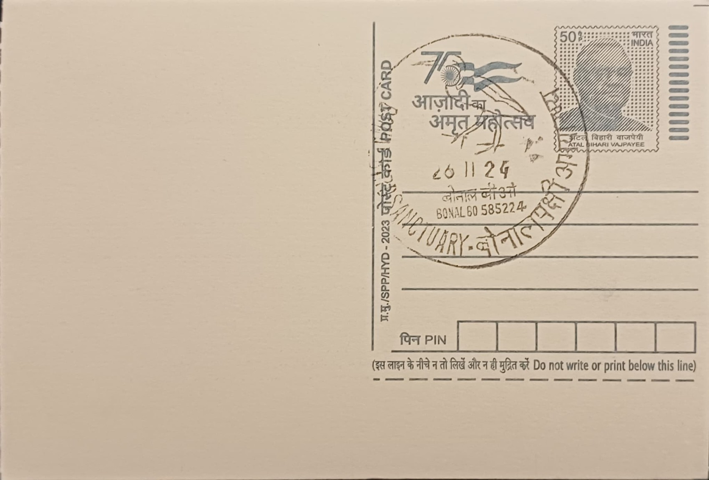

Bonal Bird Sanctuary
ಬೋನಾಳ ಪಕ್ಷಿಧಾಮ


Bonal Bird Sanctuary takes its name from the adjoining village of Bonal in Shorapur taluk, and its origin lies not in any natural wetland but in a man-made irrigation tank first constructed in the seventeenth century by Pam Naik, a ruler of the Shorapur principality, as part of efforts to secure water for agriculture across the semi-arid tract of what is now Yadgiri district. The tank was substantially enlarged in the nineteenth century under Meadows Taylor, the British administrator posted at Shorapur, who extended its spread to roughly 1,600 acres with an average depth of about twelve feet, fixing much of the water body's present form centuries before any conservation purpose was attached to it.
For most of its history the Bonal tank functioned purely as an irrigation and fisheries resource, and its value as bird habitat was recognised only much later. In 1998, following representations from conservationists, the Karnataka government transferred jurisdiction over the tank from the Fisheries Department to the Forest Department and fishing within it was banned, a decisive step that allowed waterbird populations to build up undisturbed. Formal notification as a wildlife sanctuary followed only in 2011, giving Bonal legal protected-area status and making it, by area of water spread, the second-largest bird sanctuary in Karnataka after Ranganathittu in Mandya district.
The sanctuary today covers around 700 acres of open water set within the larger historic tank bed, bordered by rocky hillocks and irrigated farmland typical of the Deccan plateau's drier interior. Surveys have recorded roughly two dozen species using the site, among them purple heron, white-necked stork, white ibis, black ibis, brahminy duck, and bar-headed goose, alongside numerous other herons, egrets, and waterfowl that depend on the tank's shallow marshy fringes for feeding and, in season, nesting. This concentration of waterbirds in a landscape with few natural wetlands underscores how thoroughly the ecological identity of the site has been shaped by its engineered, rather than natural, origins.
A distinguishing feature of Bonal is the seasonal rhythm imposed by its irrigation function: water levels fluctuate with the agricultural calendar, periodically exposing mudflats and shallows that prove especially attractive to migratory and resident waders during the winter months, when visitor and birdwatcher activity at the sanctuary is at its highest. The surrounding rocky terrain and scrub also support a modest population of terrestrial fauna, adding to the site's value as one of the few protected habitats of any kind in Yadgiri district, an area otherwise known chiefly for its dry interior plateau scenery rather than wildlife tourism.
Administratively, Bonal Bird Sanctuary falls under the Karnataka Forest Department, which oversees the site jointly with the state tourism department's promotion of it as a destination alongside nearby attractions such as Yadagiri Fort and the Basavasagara dam. The sanctuary remains a comparatively modest entry on most travel itineraries next to better-known Karnataka wetlands, but it is increasingly cited in state wildlife surveys and birding circuits precisely because of that lesser-known status, drawing a small but steady stream of birdwatchers and researchers to Shorapur taluk each winter season.
| Date of Introduction | November 26, 2024 |
|---|---|
| Address | Branch Postmaster, |
| Bonal BO, | |
| Yadgiri (dt.), Karnataka - 585224. |